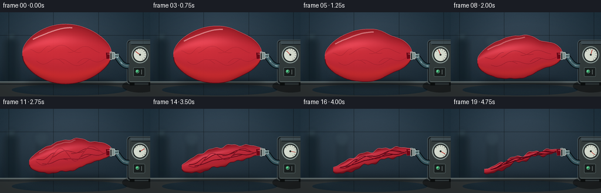
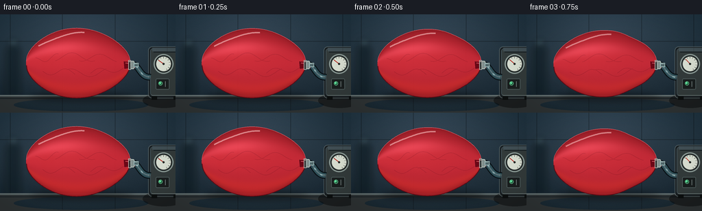

CODING AGENTS AS PIXEL WORLD MODELS
traex/GPT-5.6-Sol · phygen_020
点击播放 · 原生 RGB 像素
逐轮保存的候选
回放视频、检查图与代码变化。
每份候选均可单独播放。实际图片检查记录在下方工具轨迹中。
候选 01播放与检查图
点击播放 · 原生 RGB 像素

展开代码变化
--- 上一保存版本
+++ 本次保存版本
@@ -0,0 +1,248 @@
+from pathlib import Path
+import math
+import numpy as np
+from PIL import Image, ImageDraw, ImageFilter, ImageFont
+import artifact_io
+
+# Deterministic procedural rendering; no external assets.
+W, H, N = 256, 144, 20
+S = 4
+WS, HS = W*S, H*S
+rng = np.random.default_rng(20020)
+
+
+def C(v):
+ return tuple(int(x) for x in v)
+
+def pts_scaled(points):
+ return [(int(x*S), int(y*S)) for x,y in points]
+
+def smoothstep(x):
+ x = max(0.0, min(1.0, x))
+ return x*x*(3-2*x)
+
+def background(frame_i):
+ # Cool lab wall, with a softly lit workbench and slight photographic grain.
+ yy, xx = np.mgrid[0:HS, 0:WS]
+ nx, ny = xx/WS, yy/HS
+ light = 14*np.exp(-((nx-.43)/.38)**2 - ((ny-.23)/.63)**2)
+ vign = 15*((nx-.50)**2 + 1.8*(ny-.48)**2)
+ base = np.zeros((HS,WS,3), dtype=np.float32)
+ base[...,0] = 25 + 15*(1-ny) + light - vign
+ base[...,1] = 38 + 20*(1-ny) + 1.0*light - vign*.75
+ base[...,2] = 47 + 23*(1-ny) + 1.15*light - vign*.60
+ # wall tile seams
+ for x0 in [15, 91, 168, 244]:
+ base[:, max(0,(x0*S)-2):min(WS,(x0*S)+2), :] *= .70
+ base[39*S:40*S,:,:] *= .72
+ # fixed fine sensor grain to keep frame coherence
+ grain = rng.normal(0, 1.25, (HS,WS,1))
+ base += grain
+ im = Image.fromarray(np.uint8(np.clip(base,0,255)), 'RGB')
+ # deliberately blurred background lab silhouettes
+ blur = Image.new('RGBA',(WS,HS),(0,0,0,0)); d=ImageDraw.Draw(blur,'RGBA')
+ d.rounded_rectangle((7*S,47*S,31*S,122*S), radius=5*S, fill=(14,27,34,150), outline=(86,123,130,35), width=1*S)
+ d.rectangle((13*S,38*S,25*S,49*S), fill=(19,32,39,135))
+ d.ellipse((10*S,35*S,28*S,43*S), fill=(80,110,113,45))
+ d.rounded_rectangle((63*S,48*S,78*S,118*S),radius=3*S,fill=(26,43,50,75))
+ d.ellipse((57*S,39*S,84*S,60*S),fill=(72,99,103,26))
+ blur=blur.filter(ImageFilter.GaussianBlur(3.2*S))
+ im=Image.alpha_composite(im.convert('RGBA'),blur)
+ # countertop
+ ov=Image.new('RGBA',(WS,HS),(0,0,0,0)); d=ImageDraw.Draw(ov,'RGBA')
+ d.rectangle((0,118*S,WS,HS), fill=(42,51,54,255))
+ d.rectangle((0,118*S,WS,120*S), fill=(117,128,126,200))
+ d.rectangle((0,121*S,WS,HS), fill=(46,51,52,255))
+ d.line((0,123*S,WS,123*S), fill=(19,23,24,150), width=S)
+ # long bench reflection
+ d.ellipse((20*S,123*S,216*S,142*S), fill=(95,105,102,18))
+ return Image.alpha_composite(im,ov)
+
+def draw_pump(im, q, i):
+ # Compact diaphragm vacuum pump at right.
+ lay=Image.new('RGBA',(WS,HS),(0,0,0,0)); d=ImageDraw.Draw(lay,'RGBA')
+ # cast shadow and rear body
+ d.ellipse((208*S,115*S,270*S,137*S),fill=(0,0,0,105))
+ d.rounded_rectangle((216*S,47*S,267*S,123*S),radius=6*S,fill=(25,31,34,255),outline=(115,127,125,130),width=S)
+ d.rounded_rectangle((219*S,50*S,263*S,119*S),radius=4*S,fill=(50,58,58,255),outline=(118,131,128,100),width=S)
+ # metallic top strip
+ d.rectangle((222*S,49*S,259*S,54*S),fill=(112,121,117,100))
+ d.line((224*S,55*S,258*S,55*S),fill=(9,13,14,180),width=S)
+ # pressure gauge rim
+ d.ellipse((224*S,58*S,253*S,87*S),fill=(12,17,18,255),outline=(151,165,158,220),width=2*S)
+ d.ellipse((227*S,61*S,250*S,84*S),fill=(216,222,209,255),outline=(70,78,75,255),width=S)
+ # gauge ticks
+ cx,cy=238.5,72.5
+ for k in range(9):
+ a=math.radians(220 + k*25)
+ r1,r2=8.2,10.3
+ d.line((int((cx+math.cos(a)*r1)*S),int((cy+math.sin(a)*r1)*S),int((cx+math.cos(a)*r2)*S),int((cy+math.sin(a)*r2)*S)),fill=(44,48,45,255),width=max(1,S//2))
+ # needle swings into vacuum as air is drawn
+ ang=math.radians(215 + 188*q)
+ d.line((int(cx*S),int(cy*S),int((cx+9*math.cos(ang))*S),int((cy+9*math.sin(ang))*S)),fill=(181,37,28,255),width=S)
+ d.ellipse(((cx-1.5)*S,(cy-1.5)*S,(cx+1.5)*S,(cy+1.5)*S),fill=(38,42,39,255))
+ # switch and indicator lamp
+ d.rounded_rectangle((227*S,94*S,247*S,110*S),radius=2*S,fill=(25,30,30,255),outline=(103,116,111,170),width=S)
+ d.ellipse((231*S,98*S,237*S,104*S),fill=(20,63,44,255),outline=(121,245,164,170),width=S)
+ d.ellipse((232*S,99*S,235*S,102*S),fill=(105,255,171,220))
+ d.line((241*S,98*S,241*S,106*S),fill=(156,165,159,170),width=S)
+ # rubber feet
+ d.rectangle((221*S,120*S,229*S,125*S),fill=(12,15,15,255)); d.rectangle((253*S,120*S,261*S,125*S),fill=(12,15,15,255))
+ im.alpha_composite(lay)
+
+def hose_curve(t):
+ # cubic from valve to pump inlet
+ p0=np.array([190.0,74.0]); p1=np.array([203.0,70.0]); p2=np.array([202.0,92.0]); p3=np.array([219.0,92.0])
+ return (1-t)**3*p0 + 3*(1-t)**2*t*p1 + 3*(1-t)*t*t*p2 + t**3*p3
+
+def draw_hose(im, i, q):
+ lay=Image.new('RGBA',(WS,HS),(0,0,0,0)); d=ImageDraw.Draw(lay,'RGBA')
+ path=[tuple(hose_curve(t)) for t in np.linspace(0,1,80)]
+ p=pts_scaled(path)
+ d.line(p,fill=(6,13,17,230),width=10*S,joint='curve')
+ d.line(p,fill=(45,77,85,255),width=7*S,joint='curve')
+ d.line(p,fill=(110,154,159,105),width=3*S,joint='curve')
+ d.line([(x-S,y-S) for x,y in p],fill=(200,229,222,110),width=S,joint='curve')
+ # Fast pale slugs travel toward the pump; their fade reflects dwindling contents.
+ flow_alpha=int(165*(1-.55*q))
+ for k in range(3):
+ center=((i*.19 + k/3.0) % 1.0)
+ a=max(.02,center-.045); b=min(.98,center+.045)
+ seg=[tuple(hose_curve(t)) for t in np.linspace(a,b,10)]
+ d.line(pts_scaled(seg),fill=(189,230,229,flow_alpha),width=max(S,2*S),joint='curve')
+ im.alpha_composite(lay)
+
+def balloon_geometry(q):
+ us=np.linspace(0,1,180)
+ # The neck remains airtight and fixed; the membrane's body shortens a little while sagging.
+ xl=38 + 19*q
+ xn=190
+ xs=xl+(xn-xl)*us
+ inflated_h=48.5*(1-q)**0.78 + 5.0
+ profile=np.sin(np.pi*us)**0.54
+ # ensure a small rolled neck opening rather than a mathematical cusp
+ env=3.0 + (inflated_h-3.0)*profile*(1-.08*us)
+ # suction creates a local waist near the valve before the rest catches up
+ env *= (1 - .22*math.sin(math.pi*q)*np.exp(-((us-.78)/.11)**2))
+ center=71.5 + q*(33*(1-us)**1.45)
+ center += q*(2.3*np.sin(2*np.pi*us+0.7)+1.4*np.sin(5*np.pi*us))*(1-us)*q
+ # asymmetrical creasing grows as tension is lost
+ wrinkle=q**1.5
+ top=center-env + wrinkle*(2.0*np.sin(9*np.pi*us+0.3)+1.15*np.sin(17*np.pi*us))*profile
+ bot=center+env + wrinkle*(2.4*np.sin(8*np.pi*us+1.1)+1.35*np.sin(19*np.pi*us+.4))*profile
+ # a heavy lower flap hangs down at the last stage
+ bot += 5.0*q*q*np.exp(-((us-.20)/.17)**2)
+ return us,xs,top,bot,center,env
+
+def draw_balloon(im, q, i):
+ us,xs,top,bot,center,env=balloon_geometry(q)
+ poly=np.vstack([np.c_[xs,top],np.c_[xs[::-1],bot[::-1]]])
+ mask=Image.new('L',(WS,HS),0); md=ImageDraw.Draw(mask)
+ md.polygon(pts_scaled(poly),fill=255)
+ # soft grounding shadow follows collapsing volume
+ sh=Image.new('RGBA',(WS,HS),(0,0,0,0)); sd=ImageDraw.Draw(sh,'RGBA')
+ shadow_y=119.5
+ sd.ellipse(((43+10*q)*S,(shadow_y-4+q)*S,195*S,(shadow_y+8)*S),fill=(0,0,0,int(115-18*q)))
+ sh=sh.filter(ImageFilter.GaussianBlur((5+2*q)*S))
+ im.alpha_composite(sh)
+ # Latex shading derived from local contour position and fixed studio lights.
+ yy,xx=np.mgrid[0:HS,0:WS]; X=xx/S; Y=yy/S
+ # interpolate local center/envelope by x
+ cen=np.interp(X.ravel(),xs,center,left=72,right=72).reshape(HS,WS)
+ ev=np.interp(X.ravel(),xs,env,left=1,right=1).reshape(HS,WS)
+ v=(Y-cen)/np.maximum(ev,1)
+ side=np.clip((X-xs[0])/(xs[-1]-xs[0]),0,1)
+ sphere=np.sqrt(np.clip(1-v*v,0,1))
+ spec=np.exp(-((v+.47)/.20)**2 - ((side-.31)/.34)**2)
+ broad=np.exp(-((v+.20)/.55)**2 - ((side-.24)/.64)**2)
+ # Inflated latex is luminous/translucent; folds become richer and darker.
+ R=137 + 67*sphere + 39*spec + 14*broad - 17*q
+ G=20 + 19*sphere + 27*spec + 7*broad - 4*q
+ B=27 + 25*sphere + 31*spec + 5*broad
+ # subtle transmitted light on the lower edge
+ trans=np.exp(-((v-.76)/.20)**2)*(1-q*.45)
+ R+=24*trans; G+=8*trans
+ tex=rng.normal(0,1.25,(HS,WS))
+ arr=np.stack([R+tex,G+tex*.45,B+tex*.55],axis=2)
+ arr=np.uint8(np.clip(arr,0,255))
+ latex=Image.fromarray(arr,'RGB').convert('RGBA')
+ # Slight transparency preserves 'thin' material.
+ latex.putalpha(mask.point(lambda x: int(x*.93)))
+ im.alpha_composite(latex)
+ # rim and crease work clipped to balloon mask
+ detail=Image.new('RGBA',(WS,HS),(0,0,0,0)); dd=ImageDraw.Draw(detail,'RGBA')
+ dd.line(pts_scaled(list(zip(xs,top))), fill=(255,125,137,175), width=S)
+ dd.line(pts_scaled(list(zip(xs,bot))), fill=(75,3,16,205), width=max(S,2*S))
+ # long glossy reflection on taut balloon disappears as it wrinkles
+ if q < .82:
+ uu=np.linspace(.12,.56,55)
+ xp=np.interp(uu,us,xs)
+ yp=np.interp(uu,us,top)+np.interp(uu,us,env)*(.17+.06*np.sin(uu*8))
+ dd.line(pts_scaled(list(zip(xp,yp))),fill=(255,202,201,int(150*(1-q))),width=max(S,2*S),joint='curve')
+ # material folds: stable in position, progressively visible and compressed
+ fold_alpha=int(35+205*q*q)
+ folds=[(.16, .47, 0.3),(.28,.66,2.1),(.39,.77,4.0),(.51,.87,1.1),(.62,.94,3.0),(.09,.31,5.2)]
+ for j,(a,b,phase) in enumerate(folds):
+ uu=np.linspace(a,b,45)
+ xp=np.interp(uu,us,xs)
+ cc=np.interp(uu,us,center); ee=np.interp(uu,us,env)
+ # sinuous crease crossing from upper to lower parts
+ frac=.12*np.sin((uu-a)/(b-a)*math.pi*2+phase) + (.28 if j%2==0 else -.18)
+ yp=cc+ee*frac + q*1.2*np.sin(uu*22+phase)
+ pp=pts_scaled(list(zip(xp,yp)))
+ dd.line(pp,fill=(67,0,14,fold_alpha),width=max(S, int((.7+q)*S)),joint='curve')
+ # lit lip alongside each dark fold
+ dd.line([(x,y-S) for x,y in pp],fill=(255,93,110,int(fold_alpha*.42)),width=max(1,S//2),joint='curve')
+ # final crinkles and overlapping flap edges
+ if q>.43:
+ a2=int(210*(q-.43)/.57)
+ for k in range(7):
+ a=.08+k*.105; b=min(.98,a+.20)
+ uu=np.linspace(a,b,35); xp=np.interp(uu,us,xs)
+ cc=np.interp(uu,us,center); ee=np.interp(uu,us,env)
+ yp=cc + ee*(.50*np.sin((uu-a)/(b-a)*math.pi + k*1.7)-.05)
+ dd.line(pts_scaled(list(zip(xp,yp))),fill=(84,3,20,a2),width=S,joint='curve')
+ # clip every interior detail to latex silhouette
+ clipped=Image.composite(detail,Image.new('RGBA',(WS,HS),(0,0,0,0)),mask)
+ im.alpha_composite(clipped)
+
+def draw_valve(im, q):
+ # Rolled latex neck grips a rigid barbed connector: visibly sealed, never vented to room.
+ lay=Image.new('RGBA',(WS,HS),(0,0,0,0)); d=ImageDraw.Draw(lay,'RGBA')
+ d.polygon(pts_scaled([(180,68.5),(194,69.5),(197,78),(181,80)]),fill=(108,7,22,255),outline=(245,73,89,230))
+ d.line((183*S,71*S,193*S,72*S),fill=(255,139,147,180),width=S)
+ # compression collar and clear nipple
+ d.rounded_rectangle((190*S,68*S,196*S,80*S),radius=2*S,fill=(128,142,140,255),outline=(225,235,224,210),width=S)
+ d.rectangle((195*S,71*S,202*S,77*S),fill=(78,101,104,255),outline=(174,203,201,210),width=S)
+ d.line((196*S,72*S,200*S,72*S),fill=(230,246,240,150),width=S)
+ # tight clamp ring
+ d.rectangle((187*S,67*S,191*S,81*S),fill=(45,50,50,255),outline=(181,190,184,220),width=S)
+ d.line((188*S,69*S,190*S,69*S),fill=(238,241,231,180),width=S)
+ im.alpha_composite(lay)
+
+def draw_foreground(im):
+ # Tiny bench glints and frame-edge vignette.
+ ov=Image.new('RGBA',(WS,HS),(0,0,0,0)); d=ImageDraw.Draw(ov,'RGBA')
+ d.line((17*S,130*S,75*S,130*S),fill=(162,172,165,25),width=S)
+ # optical vignette
+ yy,xx=np.mgrid[0:HS,0:WS]; nx=(xx-WS/2)/(WS/2); ny=(yy-HS/2)/(HS/2)
+ a=np.uint8(np.clip((nx*nx+ny*ny-.47)*24,0,30))
+ dark=np.zeros((HS,WS,4),dtype=np.uint8); dark[...,3]=a
+ im.alpha_composite(Image.fromarray(dark,'RGBA'))
+
+frames=[]
+for i in range(N):
+ t=i/(N-1)
+ # timelapse easing: immediate tautness loss, then the last trapped air is pulled away.
+ q=smoothstep(t)
+ im=background(i)
+ draw_pump(im,q,i)
+ draw_hose(im,i,q)
+ draw_balloon(im,q,i)
+ draw_valve(im,q)
+ draw_foreground(im)
+ im=im.convert('RGB').resize((W,H),Image.Resampling.LANCZOS)
+ frames.append(np.asarray(im,dtype=np.uint8))
+frames=np.stack(frames,axis=0)
+assert frames.shape==(20,144,256,3) and frames.dtype==np.uint8
+artifact_io.save(frames,Path(__file__).resolve().parent)
可观测工具轨迹
实际执行的命令与返回图片。
命令 1exit 0
/bin/bash -lc "cat prompt.txt && printf '\\n---RULES---\\n' && cat GENERATION_RULES.md && printf '\\n---SPEC---\\n' && cat task_spec.json"
命令 2exit 1
/bin/bash -lc "find . -maxdepth 2 -type f -printf '%p %s bytes\\n' | sort && printf '\\nTools:\\n' && command -v ffmpeg && command -v python3 && python3 - <<'PY' mods=['PIL','numpy','cv2','imageio','moviepy','cairo','moderngl'] for m in mods: try: x=__import__(m); print(m,'OK',getattr(x,'__version__','')) except Exception as e: print(m,'NO',e) PY"
命令 3exit 0
/bin/bash -lc 'cat artifact_io.py'
命令 4exit 0
/bin/bash -lc 'for x in ffmpeg python3; do command -v "$x" || true; done; python3 - <<'"'PY' mods=['PIL','numpy','cv2','imageio','moviepy','cairo','moderngl'] for m in mods: try: x=__import__(m); print(m,'OK',getattr(x,'__version__','')) except Exception as e: print(m,'NO',type(e).__name__,e) PY"
命令 5exit 0
/bin/bash -lc "cat > generate.py <<'PY'
from pathlib import Path
import math
import numpy as np
from PIL import Image, ImageDraw, ImageFilter, ImageFont
import artifact_io
# Deterministic procedural rendering; no external assets.
W, H, N = 256, 144, 20
S = 4
WS, HS = W*S, H*S
rng = np.random.default_rng(20020)
def C(v):
return tuple(int(x) for x in v)
def pts_scaled(points):
return [(int(x*S), int(y*S)) for x,y in points]
def smoothstep(x):
x = max(0.0, min(1.0, x))
return x*x*(3-2*x)
def background(frame_i):
# Cool lab wall, with a softly lit workbench and slight photographic grain.
yy, xx = np.mgrid[0:HS, 0:WS]
nx, ny = xx/WS, yy/HS
light = 14*np.exp(-((nx-.43)/.38)**2 - ((ny-.23)/.63)**2)
vign = 15*((nx-.50)**2 + 1.8*(ny-.48)**2)
base = np.zeros((HS,WS,3), dtype=np.float32)
base[...,0] = 25 + 15*(1-ny) + light - vign
base[...,1] = 38 + 20*(1-ny) + 1.0*light - vign*.75
base[...,2] = 47 + 23*(1-ny) + 1.15*light - vign*.60
# wall tile seams
for x0 in [15, 91, 168, 244]:
base[:, max(0,(x0*S)-2):min(WS,(x0*S)+2), :] *= .70
base[39*S:40*S,:,:] *= .72
# fixed fine sensor grain to keep frame coherence
grain = rng.normal(0, 1.25, (HS,WS,1))
base += grain
im = Image.fromarray(np.uint8(np.clip(base,0,255)), 'RGB')
# deliberately blurred background lab silhouettes
blur = Image.new('RGBA',(WS,HS),(0,0,0,0)); d=ImageDraw.Draw(blur,'RGBA')
d.rounded_rectangle((7*S,47*S,31*S,122*S), radius=5*S, fill=(14,27,34,150), outline=(86,123,130,35), width=1*S)
d.rectangle((13*S,38*S,25*S,49*S), fill=(19,32,39,135))
d.ellipse((10*S,35*S,28*S,43*S), fill=(80,110,113,45))
d.rounded_rectangle((63*S,48*S,78*S,118*S),radius=3*S,fill=(26,43,50,75))
d.ellipse((57*S,39*S,84*S,60*S),fill=(72,99,103,26))
blur=blur.filter(ImageFilter.GaussianBlur(3.2*S))
im=Image.alpha_composite(im.convert('RGBA'),blur)
# countertop
ov=Image.new('RGBA',(WS,HS),(0,0,0,0)); d=ImageDraw.Draw(ov,'RGBA')
d.rectangle((0,118*S,WS,HS), fill=(42,51,54,255))
d.rectangle((0,118*S,WS,120*S), fill=(117,128,126,200))
d.rectangle((0,121*S,WS,HS), fill=(46,51,52,255))
d.line((0,123*S,WS,123*S), fill=(19,23,24,150), width=S)
# long bench reflection
d.ellipse((20*S,123*S,216*S,142*S), fill=(95,105,102,18))
return Image.alpha_composite(im,ov)
def draw_pump(im, q, i):
# Compact diaphragm vacuum pump at right.
lay=Image.new('RGBA',(WS,HS),(0,0,0,0)); d=ImageDraw.Draw(lay,'RGBA')
# cast shadow and rear body
d.ellipse((208*S,115*S,270*S,137*S),fill=(0,0,0,105))
d.rounded_rectangle((216*S,47*S,267*S,123*S),radius=6*S,fill=(25,31,34,255),outline=(115,127,125,130),width=S)
d.rounded_rectangle((219*S,50*S,263*S,119*S),radius=4*S,fill=(50,58,58,255),outline=(118,131,128,100),width=S)
# metallic top strip
d.rectangle((222*S,49*S,259*S,54*S),fill=(112,121,117,100))
d.line((224*S,55*S,258*S,55*S),fill=(9,13,14,180),width=S)
# pressure gauge rim
d.ellipse((224*S,58*S,253*S,87*S),fill=(12,17,18,255),outline=(151,165,158,220),width=2*S)
d.ellipse((227*S,61*S,250*S,84*S),fill=(216,222,209,255),outline=(70,78,75,255),width=S)
# gauge ticks
cx,cy=238.5,72.5
for k in range(9):
a=math.radians(220 + k*25)
r1,r2=8.2,10.3
d.line((int((cx+math.cos(a)*r1)*S),int((cy+math.sin(a)*r1)*S),int((cx+math.cos(a)*r2)*S),int((cy+math.sin(a)*r2)*S)),fill=(44,48,45,255),width=max(1,S//2))
# needle swings into vacuum as air is drawn
ang=math.radians(215 + 188*q)
d.line((int(cx*S),int(cy*S),int((cx+9*math.cos(ang))*S),int((cy+9*math.sin(ang))*S)),fill=(181,37,28,255),width=S)
d.ellipse(((cx-1.5)*S,(cy-1.5)*S,(cx+1.5)*S,(cy+1.5)*S),fill=(38,42,39,255))
# switch and indicator lamp
d.rounded_rectangle((227*S,94*S,247*S,110*S),radius=2*S,fill=(25,30,30,255),outline=(103,116,111,170),width=S)
d.ellipse((231*S,98*S,237*S,104*S),fill=(20,63,44,255),outline=(121,245,164,170),width=S)
d.ellipse((232*S,99*S,235*S,102*S),fill=(105,255,171,220))
d.line((241*S,98*S,241*S,106*S),fill=(156,165,159,170),width=S)
# rubber feet
d.rectangle((221*S,120*S,229*S,125*S),fill=(12,15,15,255)); d.rectangle((253*S,120*S,261*S,125*S),fill=(12,15,15,255))
im.alpha_composite(lay)
def hose_curve(t):
# cubic from valve to pump inlet
p0=np.array([190.0,74.0]); p1=np.array([203.0,70.0]); p2=np.array([202.0,92.0]); p3=np.array([219.0,92.0])
return (1-t)**3*p0 + 3*(1-t)**2*t*p1 + 3*(1-t)*t*t*p2 + t**3*p3
def draw_hose(im, i, q):
lay=Image.new('RGBA',(WS,HS),(0,0,0,0)); d=ImageDraw.Draw(lay,'RGBA')
path=[tuple(hose_curve(t)) for t in np.linspace(0,1,80)]
p=pts_scaled(path)
d.line(p,fill=(6,13,17,230),width=10*S,joint='curve')
d.line(p,fill=(45,77,85,255),width=7*S,joint='curve')
d.line(p,fill=(110,154,159,105),width=3*S,joint='curve')
d.line([(x-S,y-S) for x,y in p],fill=(200,229,222,110),width=S,joint='curve')
# Fast pale slugs travel toward the pump; their fade reflects dwindling contents.
flow_alpha=int(165*(1-.55*q))
for k in range(3):
center=((i*.19 + k/3.0) % 1.0)
a=max(.02,center-.045); b=min(.98,center+.045)
seg=[tuple(hose_curve(t)) for t in np.linspace(a,b,10)]
d.line(pts_scaled(seg),fill=(189,230,229,flow_alpha),width=max(S,2*S),joint='curve')
im.alpha_composite(lay)
def balloon_geometry(q):
us=np.linspace(0,1,180)
# The neck remains airtight and fixed; the membrane's body shortens a little while sagging.
xl=38 + 19*q
xn=190
xs=xl+(xn-xl)*us
inflated_h=48.5*(1-q)**0.78 + 5.0
profile=np.sin(np.pi*us)**0.54
# ensure a small rolled neck opening rather than a mathematical cusp
env=3.0 + (inflated_h-3.0)*profile*(1-.08*us)
# suction creates a local waist near the valve before the rest catches up
env *= (1 - .22*math.sin(math.pi*q)*np.exp(-((us-.78)/.11)**2))
center=71.5 + q*(33*(1-us)**1.45)
center += q*(2.3*np.sin(2*np.pi*us+0.7)+1.4*np.sin(5*np.pi*us))*(1-us)*q
# asymmetrical creasing grows as tension is lost
wrinkle=q**1.5
top=center-env + wrinkle*(2.0*np.sin(9*np.pi*us+0.3)+1.15*np.sin(17*np.pi*us))*profile
bot=center+env + wrinkle*(2.4*np.sin(8*np.pi*us+1.1)+1.35*np.sin(19*np.pi*us+.4))*profile
# a heavy lower flap hangs down at the last stage
bot += 5.0*q*q*np.exp(-((us-.20)/.17)**2)
return us,xs,top,bot,center,env
def draw_balloon(im, q, i):
us,xs,top,bot,center,env=balloon_geometry(q)
poly=np.vstack([np.c_[xs,top],np.c_[xs[::-1],bot[::-1]]])
mask=Image.new('L',(WS,HS),0); md=ImageDraw.Draw(mask)
md.polygon(pts_scaled(poly),fill=255)
# soft grounding shadow follows collapsing volume
sh=Image.new('RGBA',(WS,HS),(0,0,0,0)); sd=ImageDraw.Draw(sh,'RGBA')
shadow_y=119.5
sd.ellipse(((43+10*q)*S,(shadow_y-4+q)*S,195*S,(shadow_y+8)*S),fill=(0,0,0,int(115-18*q)))
sh=sh.filter(ImageFilter.GaussianBlur((5+2*q)*S))
im.alpha_composite(sh)
# Latex shading derived from local contour position and fixed studio lights.
yy,xx=np.mgrid[0:HS,0:WS]; X=xx/S; Y=yy/S
# interpolate local center/envelope by x
cen=np.interp(X.ravel(),xs,center,left=72,right=72).reshape(HS,WS)
ev=np.interp(X.ravel(),xs,env,left=1,right=1).reshape(HS,WS)
v=(Y-cen)/np.maximum(ev,1)
side=np.clip((X-xs[0])/(xs[-1]-xs[0]),0,1)
sphere=np.sqrt(np.clip(1-v*v,0,1))
spec=np.exp(-((v+.47)/.20)**2 - ((side-.31)/.34)**2)
broad=np.exp(-((v+.20)/.55)**2 - ((side-.24)/.64)**2)
# Inflated latex is luminous/translucent; folds become richer and darker.
R=137 + 67*sphere + 39*spec + 14*broad - 17*q
G=20 + 19*sphere + 27*spec + 7*broad - 4*q
B=27 + 25*sphere + 31*spec + 5*broad
# subtle transmitted light on the lower edge
trans=np.exp(-((v-.76)/.20)**2)*(1-q*.45)
R+=24*trans; G+=8*trans
tex=rng.normal(0,1.25,(HS,WS))
arr=np.stack([R+tex,G+tex*.45,B+tex*.55],axis=2)
arr=np.uint8(np.clip(arr,0,255))
latex=Image.fromarray(arr,'RGB').convert('RGBA')
# Slight transparency preserves 'thin' material.
latex.putalpha(mask.point(lambda x: int(x*.93)))
im.alpha_composite(latex)
# rim and crease work clipped to balloon mask
detail=Image.new('RGBA',(WS,HS),(0,0,0,0)); dd=ImageDraw.Draw(detail,'RGBA')
dd.line(pts_scaled(list(zip(xs,top))), fill=(255,125,137,175), width=S)
dd.line(pts_scaled(list(zip(xs,bot))), fill=(75,3,16,205), width=max(S,2*S))
# long glossy reflection on taut balloon disappears as it wrinkles
if q < .82:
uu=np.linspace(.12,.56,55)
xp=np.interp(uu,us,xs)
yp=np.interp(uu,us,top)+np.interp(uu,us,env)*(.17+.06*np.sin(uu*8))
dd.line(pts_scaled(list(zip(xp,yp))),fill=(255,202,201,int(150*(1-q))),width=max(S,2*S),joint='curve')
# material folds: stable in position, progressively visible and compressed
fold_alpha=int(35+205*q*q)
folds=[(.16, .47, 0.3),(.28,.66,2.1),(.39,.77,4.0),(.51,.87,1.1),(.62,.94,3.0),(.09,.31,5.2)]
for j,(a,b,phase) in enumerate(folds):
uu=np.linspace(a,b,45)
xp=np.interp(uu,us,xs)
cc=np.interp(uu,us,center); ee=np.interp(uu,us,env)
# sinuous crease crossing from upper to lower parts
frac=.12*np.sin((uu-a)/(b-a)*math.pi*2+phase) + (.28 if j%2==0 else -.18)
yp=cc+ee*frac + q*1.2*np.sin(uu*22+phase)
pp=pts_scaled(list(zip(xp,yp)))
dd.line(pp,fill=(67,0,14,fold_alpha),width=max(S, int((.7+q)*S)),joint='curve')
# lit lip alongside each dark fold
dd.line([(x,y-S) for x,y in pp],fill=(255,93,110,int(fold_alpha*.42)),width=max(1,S//2),joint='curve')
# final crinkles and overlapping flap edges
if q>.43:
a2=int(210*(q-.43)/.57)
for k in range(7):
a=.08+k*.105; b=min(.98,a+.20)
uu=np.linspace(a,b,35); xp=np.interp(uu,us,xs)
cc=np.interp(uu,us,center); ee=np.interp(uu,us,env)
yp=cc + ee*(.50*np.sin((uu-a)/(b-a)*math.pi + k*1.7)-.05)
dd.line(pts_scaled(list(zip(xp,yp))),fill=(84,3,20,a2),width=S,joint='curve')
# clip every interior detail to latex silhouette
clipped=Image.composite(detail,Image.new('RGBA',(WS,HS),(0,0,0,0)),mask)
im.alpha_composite(clipped)
def draw_valve(im, q):
# Rolled latex neck grips a rigid barbed connector: visibly sealed, never vented to room.
lay=Image.new('RGBA',(WS,HS),(0,0,0,0)); d=ImageDraw.Draw(lay,'RGBA')
d.polygon(pts_scaled([(180,68.5),(194,69.5),(197,78),(181,80)]),fill=(108,7,22,255),outline=(245,73,89,230))
d.line((183*S,71*S,193*S,72*S),fill=(255,139,147,180),width=S)
# compression collar and clear nipple
d.rounded_rectangle((190*S,68*S,196*S,80*S),radius=2*S,fill=(128,142,140,255),outline=(225,235,224,210),width=S)
d.rectangle((195*S,71*S,202*S,77*S),fill=(78,101,104,255),outline=(174,203,201,210),width=S)
d.line((196*S,72*S,200*S,72*S),fill=(230,246,240,150),width=S)
# tight clamp ring
d.rectangle((187*S,67*S,191*S,81*S),fill=(45,50,50,255),outline=(181,190,184,220),width=S)
d.line((188*S,69*S,190*S,69*S),fill=(238,241,231,180),width=S)
im.alpha_composite(lay)
def draw_foreground(im):
# Tiny bench glints and frame-edge vignette.
ov=Image.new('RGBA',(WS,HS),(0,0,0,0)); d=ImageDraw.Draw(ov,'RGBA')
d.line((17*S,130*S,75*S,130*S),fill=(162,172,165,25),width=S)
# optical vignette
yy,xx=np.mgrid[0:HS,0:WS]; nx=(xx-WS/2)/(WS/2); ny=(yy-HS/2)/(HS/2)
a=np.uint8(np.clip((nx*nx+ny*ny-.47)*24,0,30))
dark=np.zeros((HS,WS,4),dtype=np.uint8); dark[...,3]=a
im.alpha_composite(Image.fromarray(dark,'RGBA'))
frames=[]
for i in range(N):
t=i/(N-1)
# timelapse easing: immediate tautness loss, then the last trapped air is pulled away.
q=smoothstep(t)
im=background(i)
draw_pump(im,q,i)
draw_hose(im,i,q)
draw_balloon(im,q,i)
draw_valve(im,q)
draw_foreground(im)
im=im.convert('RGB').resize((W,H),Image.Resampling.LANCZOS)
frames.append(np.asarray(im,dtype=np.uint8))
frames=np.stack(frames,axis=0)
assert frames.shape==(20,144,256,3) and frames.dtype==np.uint8
artifact_io.save(frames,Path(__file__).resolve().parent)
PY
python3 generate.py
ls -lh pixels.npz inspection.png transition_check.png index.html frames/00.png frames/19.png"视觉工具实际返回图片 1

视觉工具实际返回图片 2

保存候选 1 份；完成命令 5 次；可验证图片返回 2 张。原始 API 响应与完整日志保留在本地。